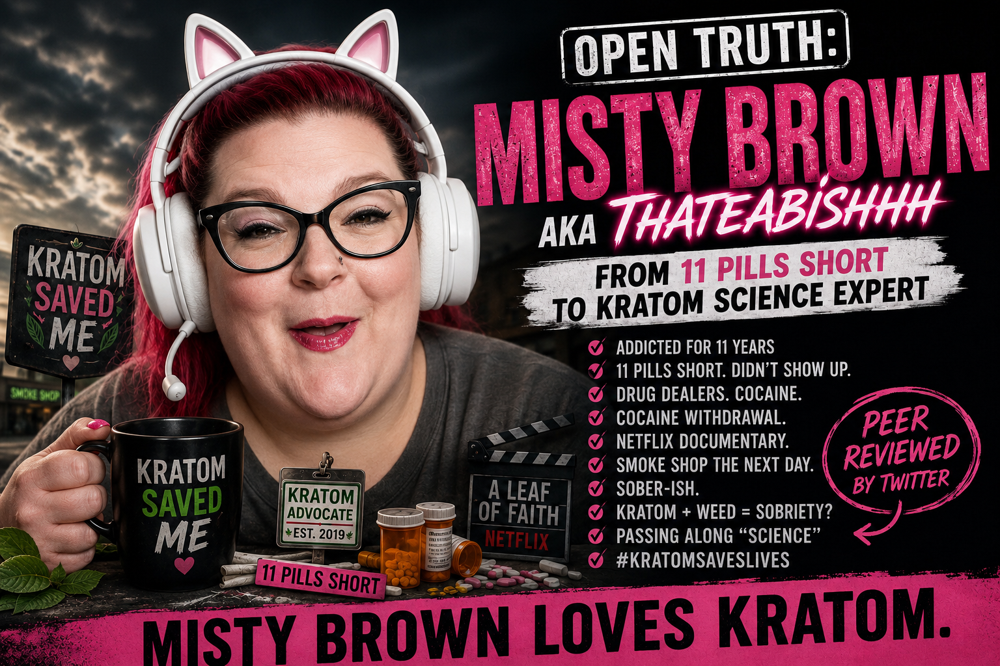

Meet Misty Brown.
Brown describes herself as a:
She has repeatedly taken her personal experience with kratom into the public-policy arena.
Fair enough.
People have every right to tell legislators what happened to them.
But when personal testimony starts wearing a lab coat and introducing itself as "science," somebody ought to check the résumé.
Fortunately, Brown submitted hers.
And, sweet merciful pharmacology, what a résumé it is.
Brown says she spent 11 years addicted to FDA-approved pain pills, benzodiazepines and muscle relaxers.
Then came April 2019.
She had a mandatory pill count.
There was one small administrative difficulty:
She was 11 pills short.
So, according to her testimony, she simply didn't show up.
Brown's earlier Connecticut testimony says exactly that. mistybrown1.pdf
Later, she became even more candid.
Brown said her drug dealers didn't have the "pink oxy 10's" she wanted. She says she then went to the streets and started using cocaine while searching for another pain-management doctor. mistybrown2.pdf
This isn't opposition research.
This is her testimony.
And then came the breakthrough.
Brown's story, condensed:
That is not satire.
That's essentially the chronology Brown herself gave lawmakers.
She says that in June 2019, while experiencing cocaine withdrawal, she watched the kratom documentary A Leaf of Faith.
Her "journey with Kratom" began the very next day. mistybrown2.pdf
No, we didn't accidentally leave medical school out of the timeline.
There wasn't any.
In 2023, Brown gave the Connecticut legislature what may be the greatest single word ever entered into a kratom hearing:
Why the "-ish"?
Brown explained that she was staying "sober-ish" because of kratom and weed, which she called the tools she needed for sobriety. She said they reduced her pain, stopped opioid cravings and elevated her mood. mistybrown1.pdf
And then came the grand finale:
And apparently we're supposed to use this testimonial to help decide how psychoactive products should be sold to the public.
Splendid.
By later testimony, Brown wasn't merely sharing her experience.
She said:
Science.
Now there's a word.
Science has methods.
Controls.
Replication.
Statistics.
Peer review.
Brown has a personal experience.
Those aren't the same thing.
Apparently somewhere between cocaine withdrawal and the smoke shop, a peer-review committee materialized in the Netflix lobby.
Brown's more recent testimony is considerably more statesmanlike.
She describes dependency progressing into addiction, being dismissed from pain management, turning to cocaine and eventually discovering kratom through A Leaf of Faith. She says kratom quieted her cravings and gave her room to rebuild her life. mistybrown3.pdf
Today, Brown says she is a thriving mother, grandmother and contributing member of society.
Good.
If her life is better, I'm glad her life is better.
But then comes the policy leap.
Brown calls the whole-leaf kratom she uses:
There's that word again.
Safe.
"Lab-tested" and "safe" are not synonyms.
Testing can establish what was detected in a product.
It doesn't magically establish the clinical safety of chronically consuming the psychoactive substance inside it.
A perfectly manufactured bottle of vodka is still alcohol.
A pharmaceutical-grade oxycodone tablet is still an opioid.
Quality control does not repeal pharmacology.
Just when you thought the peer-review process couldn't become more rigorous, we arrive at Brown's public "ThaTeaBishhh" account.
On July 4, 2025, Brown posted about what she said she didn't do that Independence Day.
Among other things, she described not scrambling for pills, not having sex with "some random dude" while in a "pill-fueled fog," not getting extremely drunk, and not waking up trying to remember why her "orifices were sore."
Then came the hashtags:
Well.
There we have it.
Pack up the clinical trials.
Cancel peer review.
Send the pharmacologists home.
ThaTeaBishhh didn't wake up with sore orifices on the Fourth of July.
Kratom efficacy: CONFIRMED.
Somewhere, the New England Journal of Medicine is furious it didn't think of this endpoint first.
This is actually where the absurdity reveals something important.
Brown's argument, stripped of the colorful details, is essentially:
Maybe kratom did help her.
But that's an anecdote.
It doesn't establish that kratom treats opioid-use disorder.
It doesn't establish population-level safety.
It doesn't establish the incidence of dependence.
It doesn't establish overdose risk.
It doesn't establish efficacy for chronic pain.
It doesn't establish efficacy for anxiety or depression.
It establishes something considerably narrower:
Nobody needs to invent anything about Brown.
The public record is already doing heavy lifting.
We didn't need a private investigator. We needed a highlighter.
And, for anyone confused by barnyard satire, the illustration is a caricature. The quotations aren't.
Brown has every right to tell her story.
She has every right to use kratom.
She has every right to advocate for it.
But I'm embarrassed that testimony like this is treated as evidence for allowing the commercial sale of a psychoactive, opioid-like product in our neighborhoods.
Look at what lawmakers are actually being handed.
A self-described kratom consumer and activist describes addiction, being 11 pills short, drug dealers, cocaine, discovering kratom through Netflix, purchasing it the following day and eventually becoming a kratom activist who says she now shares her "science." mistybrown2.pdf
And the policy conclusion is supposed to be:
No.
Personal testimony can explain why someone desperately wants continued access to a substance.
It does not establish why everyone else's neighborhood should continue commercially selling that substance.
If we're deciding whether a psychoactive product belongs on store shelves, the evidentiary standard should not be:
Find somebody who really, really likes it.
Show us safety.
Show us pharmacology.
Show us dependence data.
Show us toxicology.
Show us adverse events.
Show us drug interactions.
Show us controlled evidence of medical efficacy.
Not hashtags.
Not Netflix conversion stories.
Not Twitter peer review.
And certainly not: "Sober-ish."
Maybe Misty Brown is completely correct about what happened to Misty Brown.
Maybe kratom profoundly improved her life.
Nothing here requires denying her experience.
But her experience cannot answer the scientific and public-health questions legislators are responsible for answering.
Brown openly identifies herself as a "Kratom Consumer, Advocate & Activist." mistybrown3.pdf
She consumes kratom.
She advocates for kratom.
She credits kratom with her recovery.
She publicly says kratom saves lives.
And she asks government to preserve access to kratom.
After all of that, what has the evidence actually established?
We have established one proposition beyond reasonable dispute.
One conclusion supported by years of testimony, advocacy, hashtags and enthusiasm.
One finding so thoroughly replicated that even Twitter peer review can handle it.
The documents below are presented so readers can review Brown's statements in their original context. Descriptions summarize the contents; readers are encouraged to examine the underlying records directly.
{kind=link}
{kind=link}